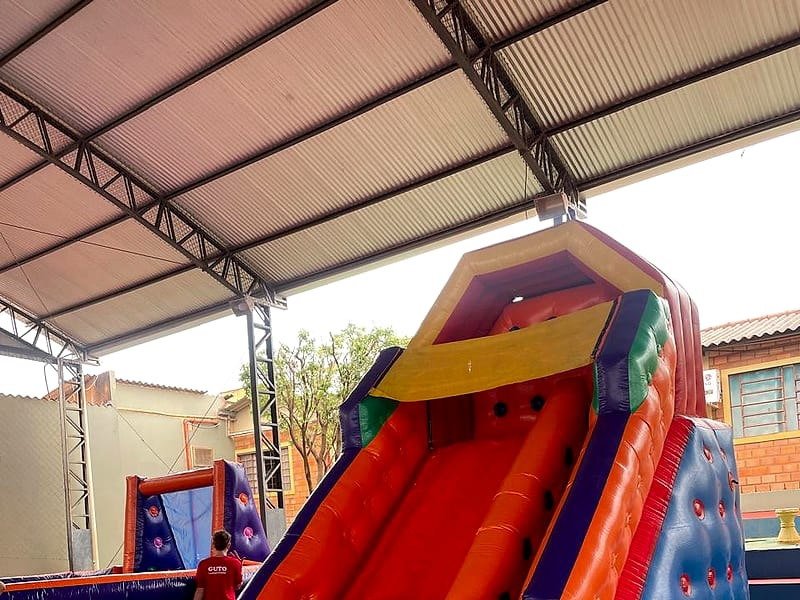
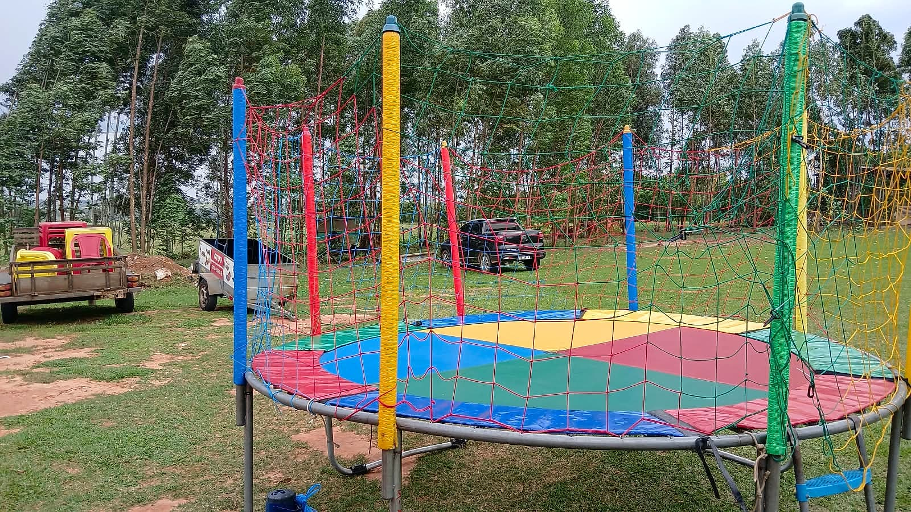
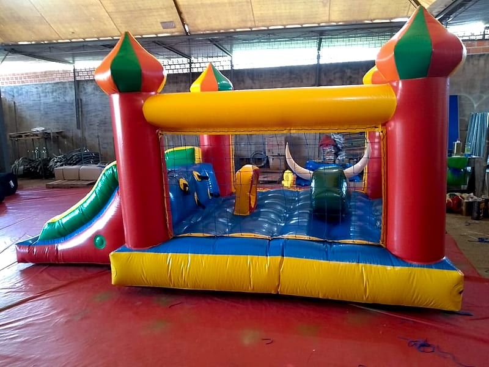
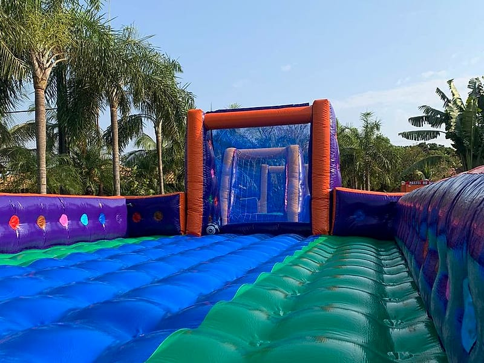
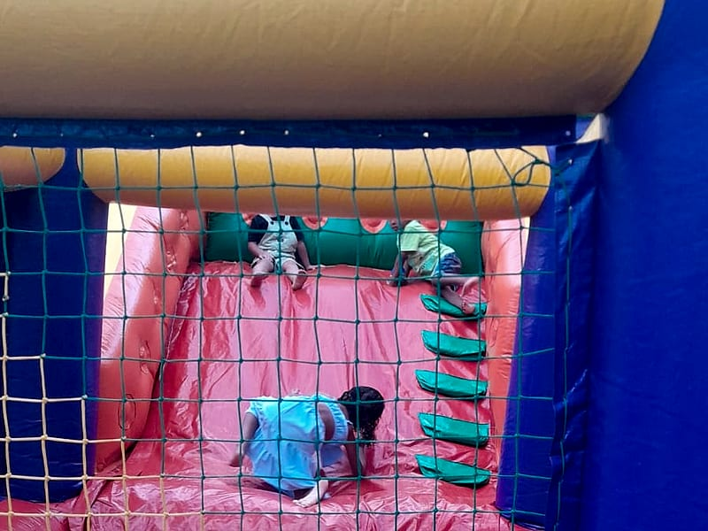
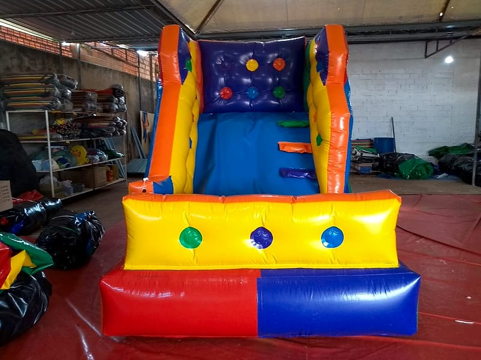
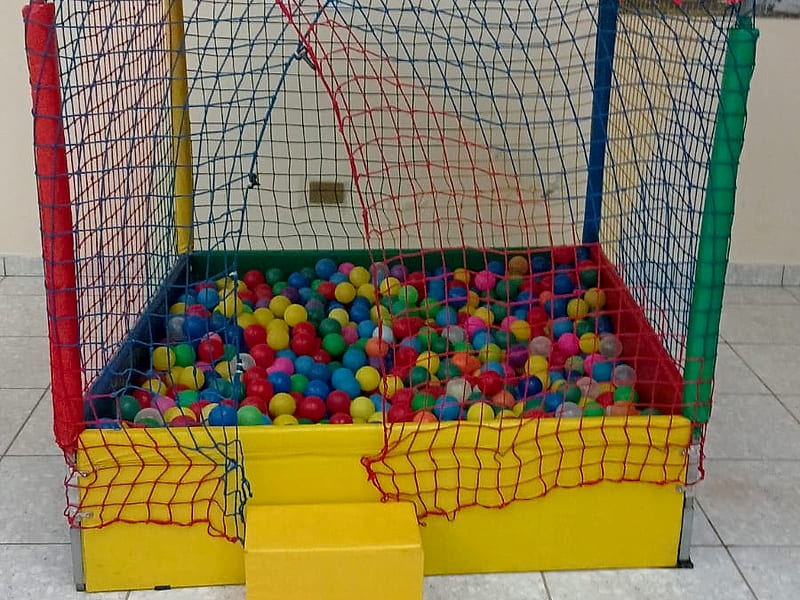
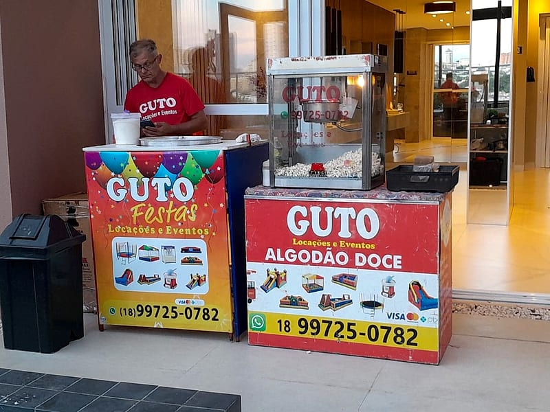
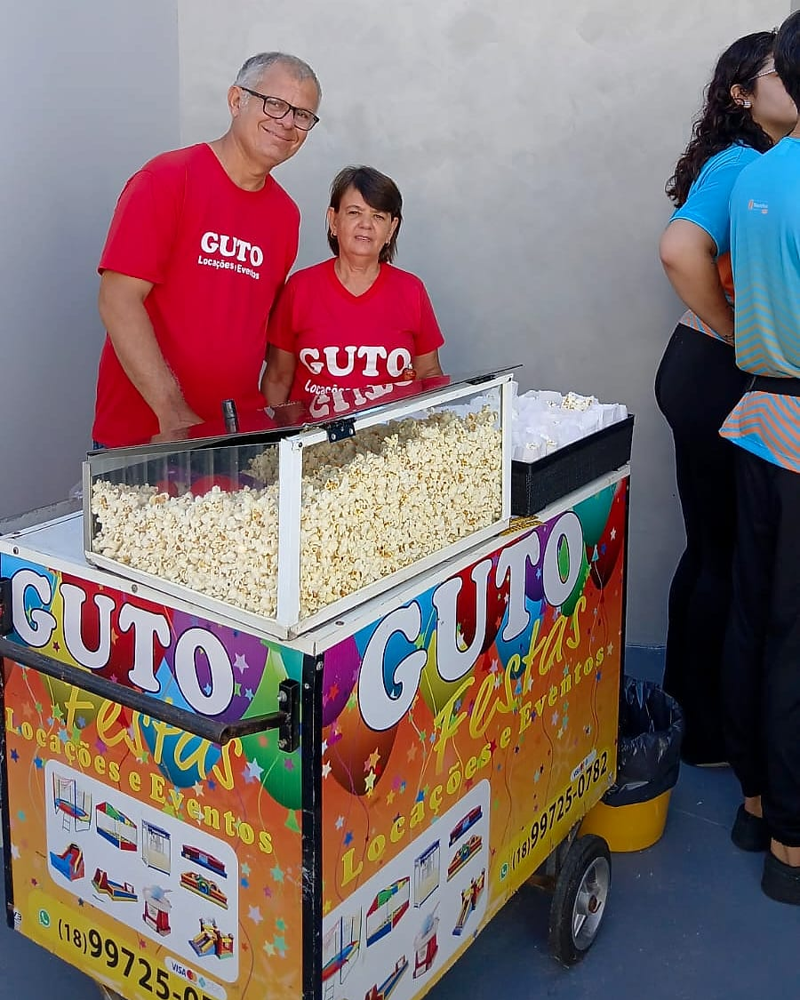

Tobogã gigante
Escada de escalada e descida longa: o mais disputado da festa.
Consultar data
Guto Locações e Eventos, Presidente Prudente
Aluguel de brinquedos para festas infantis em Presidente Prudente e região. Enquanto a criançada brinca, a equipe do Guto fica de olho em cada uma.
Toque em um brinquedo para perguntar no WhatsApp se ele está livre na data da sua festa.
Fotos reais dos brinquedos do Guto.

Escada de escalada e descida longa: o mais disputado da festa.
Consultar data
Pula-pula, escorregador e obstáculos num brinquedo só.
Consultar data
Pista enorme para a criançada correr e pular ao ar livre.
Consultar data
Rede de proteção, escadinha e muito espaço para pular.
Consultar data
Do tamanho certo para os pequenos, com degraus fáceis.
Consultar data
Cercada por rede, com degrau de entrada para os pequenininhos.
Consultar dataLuta de cotonete gigante: diversão garantida para os maiores.
Consultar data
Carrinhos com operador, servindo na hora durante a festa.
Consultar data
Os brinquedos do Guto vão com monitores, que acompanham as crianças, organizam a vez de cada uma e ficam atentos à segurança. Quem contratou conta como foi:
Brinquedos novos, em boas condições e monitores educados e profissionais.David B., avaliação pública
Experiência incrível, e quero dar meus parabéns para o monitor Pedro, um menino muito simpático.Avaliação pública
Ótimo atendimento, pessoas carinhosas com as crianças, pontual no atendimento. Nota 1000.Avaliação pública
A base fica em Presidente Prudente, e o atendimento chega a cidades do Oeste Paulista, do norte do Paraná e da divisa com o Mato Grosso do Sul.
Trechos de avaliações públicas de clientes.
Excelente atendimento. Equipe comprometida, organizada, pontual, e com muita experiência no setor de recreação. Parabéns!
Brinquedos excelentes, atendimento nota 10, monitores capacitados e gentis e o proprietário bom para negociar!
Muito bom profissional, de qualidade, com um cuidado impecável com as crianças. Obrigado pela atenção dedicada aos clientes.
Excelente atendimento, cumpriu horário, tudo certinho, super educados e prestativos.
Pontual, preço justo e brinquedos de ótima qualidade!
Nossa família adorou o atendimento, ficamos muito satisfeitos. Obrigado, Guto e equipe!
Verificando horário…
Rua Daniel Martins, 1496
Vila Formosa, Presidente Prudente, SP
Instagram @guto_locacoes e Facebook /locacoesguto
Mande a data, o bairro ou a cidade e a idade da criançada. O Guto responde com os brinquedos livres e o valor.